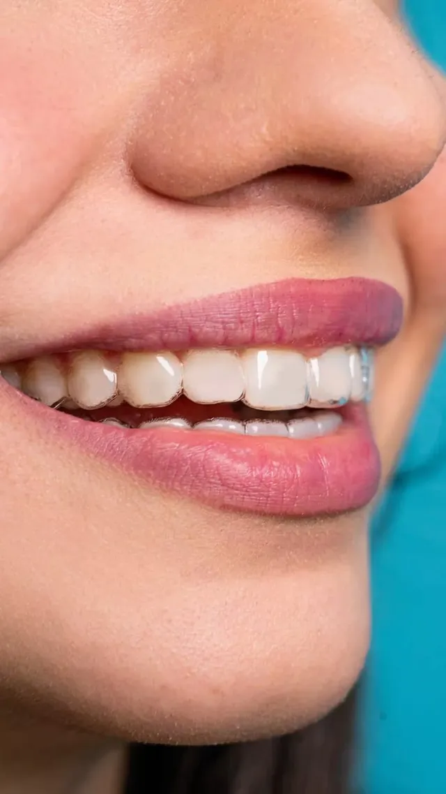
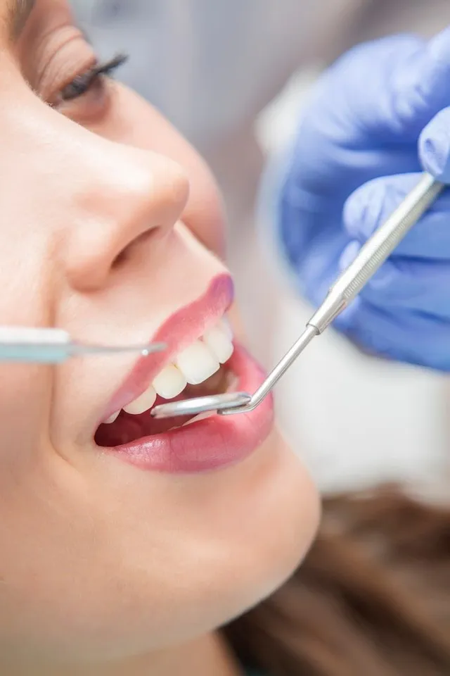
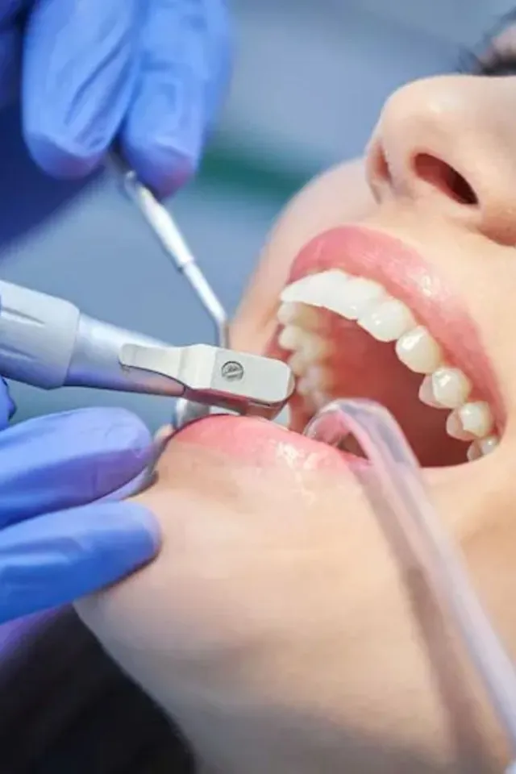

Aparat dentar fix

Bracketuri metalice, pentru corecții precise și stabile.
ProgrameazăDr. Irina Vasilescu · Ortodonție & Protetică
Aparate dentare fixe, alinieri transparente și tratamente pentru copii — planificate atent, explicate pe înțelesul tău și urmărite pas cu pas până la rezultatul final.

Trei pași clari, fără surprize.
Alegi tratamentul și ora potrivită. Te sunăm noi pentru confirmare, în aceeași zi.
Evaluare completă, scanare și radiografii. Îți explicăm toate opțiunile, fără grabă.
Primești etapele, durata estimată și costurile — clar, în scris, înainte de a începe.
De la primul aparat al copilului tău până la reabilitări complete — fiecare caz primește un plan construit special.
Bracketuri metalice, pentru corecții precise și stabile.
Programează
Bracketuri de culoarea dintelui, discrete în orice zâmbet.
Programează
Aproape invizibile, detașabile și confortabile zi de zi.
Programează
Soluție blândă pentru corecții ușoare și menținerea rezultatelor.
Programează
Intervenție la momentul potrivit, pentru o creștere armonioasă.
Programează
Coroane, punți și lucrări estetice, realizate cu atenție la detalii.
Programează
Planuri complete care redau funcția și estetica zâmbetului.
Programează
Detartraj și periaj profesional, baza oricărui tratament.
ProgrameazăUn tratament ortodontic durează luni de zile. Contează cine te însoțește pe drum.

Ortodonție și protetică sub același acoperiș: un singur medic care vede întregul tablou.
Clinică în contract cu Casa de Asigurări de Sănătate pentru tratamentele eligibile.
Scanare intraorală și simulări 3D — vezi rezultatul înainte de primul pas.

Ortodonție pentru copii
Depistarea timpurie face tratamentul mai scurt și mai blând.
Programează copilul →Câteva gânduri de la pacienții care ne-au trecut pragul.
„Am amânat ani de zile aparatul. Aici mi s-a explicat totul atât de calm, încât m-am întrebat de ce n-am venit mai devreme.”
„Fiica mea abia aștepta controalele. Răbdarea și căldura doamnei doctor au făcut toată diferența.”
„Alinierile transparente au fost alegerea perfectă pentru jobul meu. Nici colegii nu au observat.”
Sună-ne sau lasă-ne un mesaj — îți răspundem în aceeași zi lucrătoare.